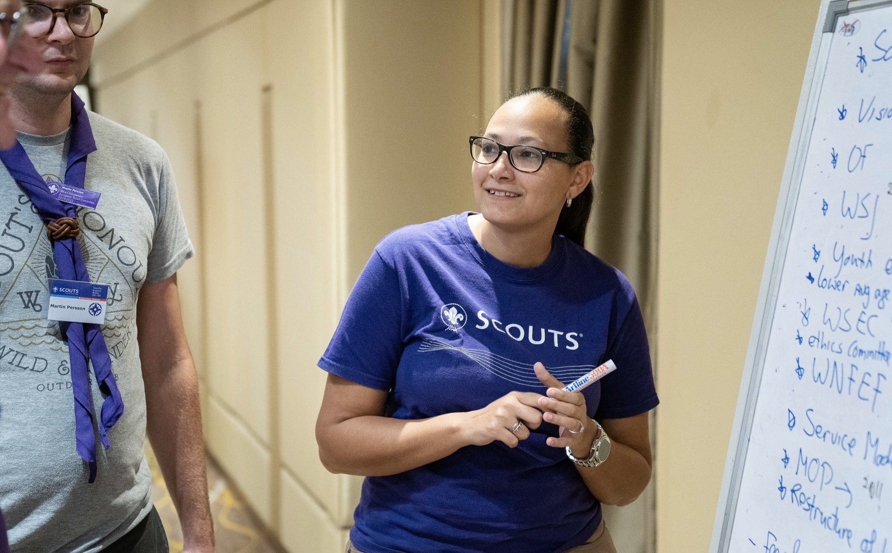
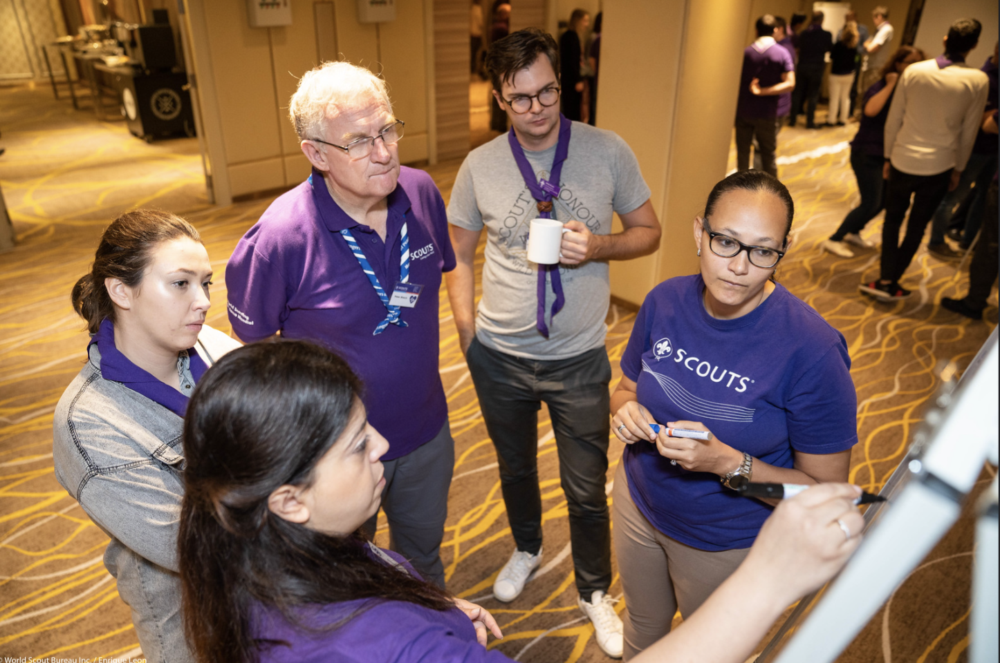

Всесвітня Організація Скаутського Руху
-

Місія ВОСР
Сприяння вихованню молоді через систему цінностей, засновану на Скаутській Обіцянці та Законі. Через Скаутинг ми будуємо кращий світ, де люди самореалізуються як особистості та відіграють конструктивну роль у суспільстві.
-

Бачення ВОСР
До 2023 року Скаутинг бачить себе провідним світовим виховним молодіжним рухом, що дає можливість 100 мільйонам молодих людей бути активними громадянами, які творять позитивні зміни у своїх громадах та в усьому світі на основі спільних цінностей.
-

Історія Організації
Всесвітня Організація Скаутського Руху (ВОСР / WOSM /ˈwʊzəm/) була створена в 1922 році і є найбільшою міжнародною молодіжною організацією. ВОСР має 173 члени – Національні Скаутські Організації, які разом налічують близько 57 мільйонів учасників.
-

Структура ВОСР
ВОСР організована за регіональним принципом і має у своєму складі Всесвітній Скаутський Комітет як виконавчий орган або “правління” ВОСР, Всесвітню Конференцію як вищий законодавчий орган та Всесвітнє Скаутське Бюро – секретаріат ВОСР.
Штаб-квартира
Скаутського Бюро
Штаб-квартира Всесвітнього Скаутського Бюро знаходиться в Куала-Лумпурі, Малайзія, і має представництва в шести регіональних підрозділах.Кожен регіон дублює всесвітню структуру ВОСР та відповідно має Регіональний Скаутський Комітет, Регіональну Скаутську Конференцію та Регіональне Скаутське Бюро.
Україна разом з іншими країнами Європи входить до Європейського Регіону.
-
Європейський регіон
Брюсель, Бельгія
-
Арабський Регіон
Каїр, Єгипет
-
Азійсько – Тихоокеанський регіон
Маніла, Філіппіни
-
АФРИКАНСЬКИЙ РЕГІОН
Найробі, Кенія
-
Інтер – Американський регіон
Панама, Панама